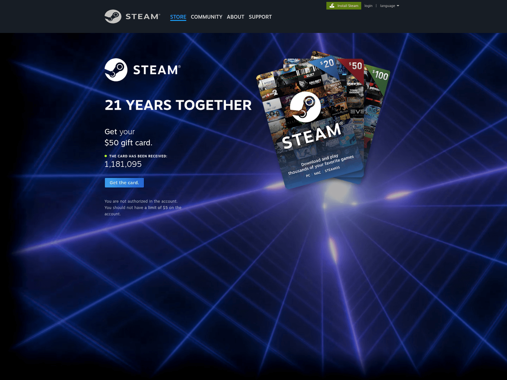
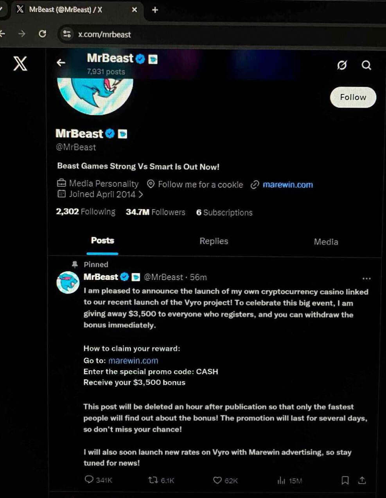
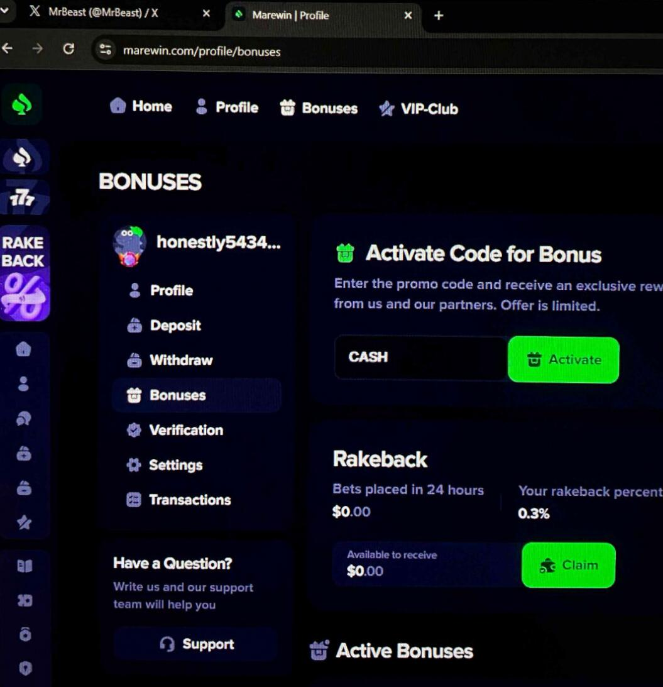
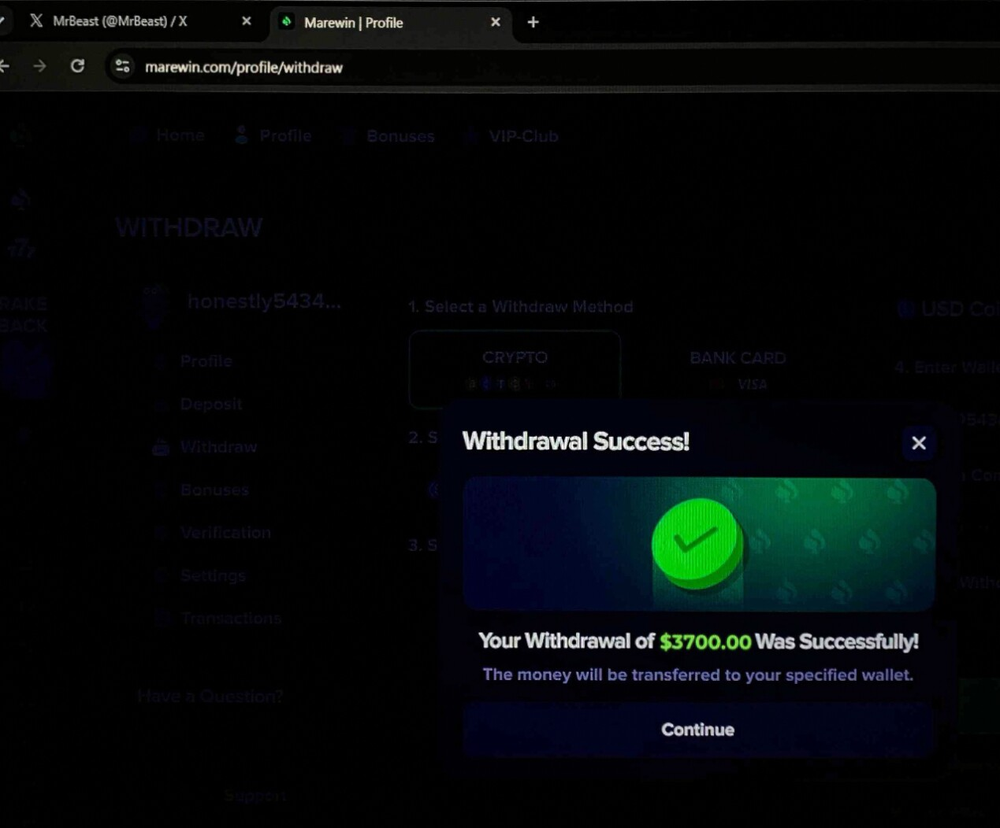
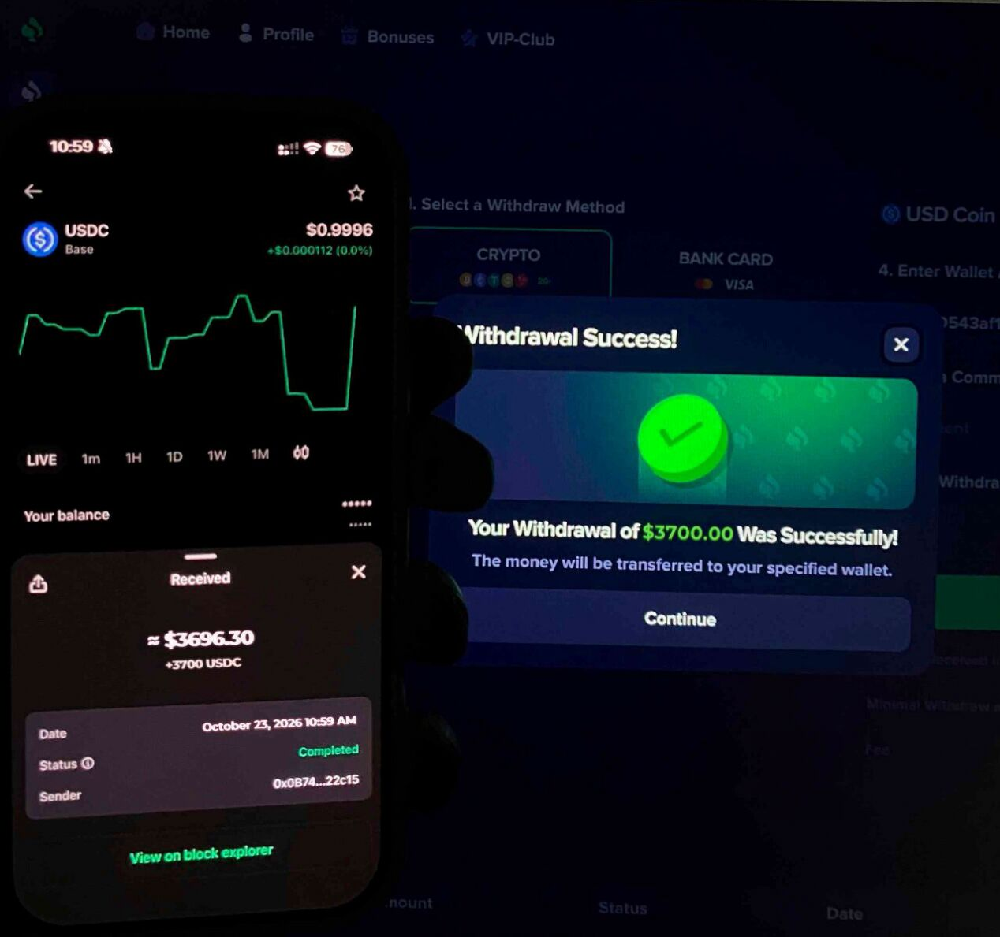

Summary#
Hijacked Steam and Discord accounts are being used to send lure images to their contacts. This report follows one set of five such images, one sent over Steam and four over Discord, and everything they lead to.
The images contain no malware. Each one is a social-engineering lure, and they lead into two separate operations.
- A Steam credential-phishing service (lane 1). The Steam image is a fake
"$100 gift card" with a QR code. The QR code opens a look-alike of
steamcommunity.comthat shows a fake Steam sign-in box. The page is one tenant of a phishing-as-a-service platform: each page carries an affiliate ID, and at least two affiliates share the servers. The same platform runs malware: at least 16 Windows programs that pose as Steam (small WebView2 windows, and 61 MB installers that unpack an Electron app), all of which load their fake sign-in pages from the platform's own servers, and at least 18 droppers named after game cheats and injectors. Russian-language pages, hosting and a lure upload under a Russian file name point to a Russian-speaking operator. - A MrBeast crypto-casino deposit scam (lane 2). The four Discord images are a scripted story: a fake MrBeast post announces a casino bonus, a user activates the code, withdraws $3,700, and shows the money arriving in a wallet. The casino domain is one of at least 25 near-identical sites on one server, each lasting a few days. The images carry deliberately broken EXIF data so that every copy has a different file hash, which defeats hash-based spam filtering.
We found no technical link between the two lanes. They share only the hijacked accounts. That fits stolen sessions being sold or rented to more than one scammer.
If you received these images: do not scan the QR code and do not visit the casino. If you already did, follow Recovery and cleanup. If your own account sent them, start there too: your Steam and Discord sessions are in someone else's hands right now.
Key findings#
- The fake Steam programs are credential-relay phishers, not infostealers. A full static re-analysis found that none of them read browser data, cookies, saved passwords or Steam files from the machine. Each shows a fake Steam sign-in window and relays what the victim types to the operator. The relay kit's own calls, recovered from one sample, send the username and password, then the Steam Guard code, then poll for the mobile approval, which is enough to take an account that has Steam Guard on.
- The Steam phish does not use a plain password form. It shows a fake Steam sign-in box inside the page, sets a signed cookie that names the affiliate who owns the link, and posts an encrypted record of the visit back to its server. Treat any password or Steam Guard code typed into it as captured.
- The phishing host
8909451279.f1shh[.]atserves a phishing page and is also the command server for three of the fake-Steam programs. Phishing and malware run on one platform, not merely on shared hosting. - Five 61 MB installers unpack an Electron app whose
package.jsonclaims to be "steam-login-app" by "Valve Corporation", compiled to V8 bytecode (bytenode) in the October builds. It loads its fake Steam sign-in fromnjrlmwtgpk[.]shop,fakefake[.]shopandpulse-keys[.]store, which serve the same Russian-language kit as the QR-code phish, now behind Cloudflare. - The fake-cheat route is real. 18 droppers named after cheat and injector products
("Phantom injector", "Medusa Lite", "Evicted Macros", "Fecurity", "Exlab" and others)
call the same
fakefake[.]shopserver. They appeared in early August 2026, a month before the fake Steam apps. - The casino lure images reuse a phrase from the casino site itself ("Your Withdrawal of $3700.00 Was Successfully!"), so the screenshots came from the real scam kit, not a mock-up.
- How the sending accounts are first compromised is not proven. The relay phish explains the Steam side directly: anyone who signs in to one of these fake windows hands over their login and Steam Guard code. The Discord side is separate. When both fall together, an infostealer taking both platforms' sessions at once is still the single best fit (medium confidence); password reuse, or two phishes, also fit.
The malware: fake Steam apps and game cheats#
The operator behind these lures runs malware as well as phishing pages. VirusTotal links 16 Windows programs to its servers, the same infrastructure that hosts the Steam phishing pages (Lane 1). We downloaded them and ran a representative of each family through CORD Research, a static analysis pipeline; nothing was executed. A second, deeper static pass then decoded the obfuscated scripts and read the bridge and hijacker code line by line. Where it changed CORD's first-pass findings, the section says so.
The key result: none of these programs is an infostealer. None reads browser data, cookies, saved passwords or Steam files from the machine. Each is a credential-relay phishing shell: a window that looks like Steam's sign-in, loads the operator's kit, and relays the username, password and Steam Guard code the victim types. They come in three forms, and they are spread through fake game cheats.
| Sample | Family | Builds | Analysis |
|---|---|---|---|
f27af032… |
WebView2 fake Steam window | 10 | Full CORD report |
c8628650… |
NSIS installer, Electron app | 5 | Full CORD report |
3d2b12f8… |
Steam client hijacker | 1 | Full CORD report |
Each full report is CORD's complete analysis: every behaviour with its evidence, all decoded strings, the static process map, how the code connects, the decompiled C and annotated assembly of every function read, and the evidence index.
WebView2 fake Steam window (f27af032)#
Verdict: malicious · credential-relay shell · family not attributed. CORD's first pass classed it as a stealer and dropper; the deeper pass corrected both.
Ten builds named steam.exe or Steam.exe: 1 MB x64, mingw-linked, first submitted
2026-09-21 to 2026-10-17, flagged by 3 to 40 engines. All ten share the same five bundled
files; two are one build with two padding bytes patched to change the hash.
Code reached is 692 of 2,508 functions from the entry; most of the rest is the statically linked WebView2 and C runtime.
How it runs#
WebView2Loader.dll (RCDATA 300) next to itself and copies itself to C:\Windows\<random>.exe.WEBVIEW2_ADDITIONAL_BROWSER_ARGUMENTS to turn off SmartScreen, Safe Browsing, phishing protection, certificate checks and web security.window.steamm bridge to that page until the window closes.What it does#
| Behaviour | ATT&CK | Note |
|---|---|---|
Writes WebView2Loader.dll from RCDATA 300 |
— | Microsoft-signed runtime; not a second stage (corrected) |
| Launches WebView2 with browser security off | T1562.001 | SmartScreen, Safe Browsing, certificate checks |
| Shows a fake Steam sign-in window | T1056.002 | Frameless, revealed after 1.5 s |
| Loads its page from the operator's kit | T1071.001 | Numbered f1shh[.]at subdomain, /client |
| Bridges the page to native code | T1559 | window.steamm, eight methods |
| Makes arbitrary HTTP requests from the victim's machine | T1071.001 | WinInet, user agent Steam/1.0 |
| Opens web links | T1204.001 | http(s) only |
| Single-instance lock | — | Spin on Sleep(1000) |
How the code connects#
The UI-thread handler (0x140005a90) receives {id, method, params} messages from the
page, parses them (0x1400075c0), dispatches, and answers {id, ok, result|error}
(0x140002900). The eight methods are win.min, win.drag, win.resize and
win.close; fs.readText (0x1400033d0) and fs.writeText (0x1400038b0), both
confined to the program's own folder; http.request (0x140004000, WinInet); and
shell.open (0x140003c10, http(s) only). The navigation to /client is a plain
Navigate with no parameters.
The function CORD's first pass called a "system fingerprint" (0x1400094c0) has no
callers. It is junk padding whose size changes with every build, there to vary the hash.
What it talks to and touches#
hxxps://8909451279.f1shh[.]at/clientin this build; six different numberedf1shh[.]atsubdomains across the ten builds.- Writes
WebView2Loader.dllbeside itself and a copy of itself underC:\Windows\.
Notable strings#
window.steamm, __steammHooked, SteamWindow, Steam/1.0,
WEBVIEW2_ADDITIONAL_BROWSER_ARGUMENTS, --disable-client-side-phishing-detection,
only http(s) allowed, unknown method:.
Verdict and detection opportunities#
YARA rules steamlure_wv2_bridge_app (bridge and browser-argument strings) and
steamlure_wv2_c2_url (the embedded f1shh /client URL); see
Detection. Of CORD's anchors, the entry stub (A1) and the WinInet client (A3)
hold. Do not use anchor A4: it rests on the junk function.
Open questions#
The kit page's JavaScript is served at run time, so what it does inside this window is known from the copy embedded in the hijacker below, not from this sample.
Read the full CORD report for f27af032 →
NSIS installer and Electron app (c8628650)#
Verdict: malicious · credential-relay shell (the Electron payload) · family not attributed. CORD's first pass classed the payload as a stealer with browser-storage access and Node integration on; the deeper pass corrected both.
Five builds, about 61 MB each, flagged by 0 to 2 engines.
Code reached is 81 of 104 functions of the NSIS stub; the payload logic lives in the unpacked layers.
How it runs#
CREATE_NO_WINDOW.main.js loads the payload: obfuscated JavaScript in the September builds, V8 bytecode (main.jsc, bytenode) from October.BrowserWindow and loads the kit from the first of three hosts that answers.Layers#
| Layer | Format | Size | What it is |
|---|---|---|---|
| L0 | PE32, NSIS 3 | 61 MB | Stock NSIS stub; Valve version info and icon |
| L1 | Electron app.asar |
202 KB | package.json: steam-login-app, "Valve Corporation", 10.50.87.67 |
| L2 | V8 bytecode main.jsc |
93 KB | The relay window (October builds) |
What it does#
| Behaviour | ATT&CK | Note |
|---|---|---|
| Unpacks and launches the payload with no window | T1204.002 | Stock NSIS code |
| Impersonates Valve | T1036.005 | Version info and package.json |
| Hides its logic | T1027 | Obfuscated JS (Sep), bytenode V8 bytecode (Oct) |
| Shows a fake Steam sign-in window | T1056.002 | Node integration off, context isolation off |
| Dresses the kit page as Steam | — | Storage cleared, UA spoofed, CSS and 52 KB script injected |
| Relays the typed login to the operator | T1041 | No disk, browser or token access |
Decoded strings#
The September builds' main.js was decoded in full by reimplementing the obfuscator's
string table and rotation in Python (the rotation checksum matched, which validates the
decode); it was never run.
TARGET_URLS:hxxps://njrlmwtgpk[.]shop/2123223,hxxps://fakefake[.]shop/3253523,hxxps://pulse-keys[.]store/6887.ANTI_DELETE = truebut never read.PROCESS_PROTECTION = false; when on it only renames the process tosvchost.exe.WATCHER_SCRIPT = ''. A--watcher <file>mode runs a script withELECTRON_RUN_AS_NODE. There is no persistence or self-protection.- The injected script carries Steam's Russian-language UI strings, so the operator's relay browser runs in Russian.
The October main.jsc files are the same program: the same three hosts, the same
functions and byte-identical injected CSS and script. The engine is Electron 25.9.8 with
V8 11.4.183.29; "Chrome 122" is only the spoofed user agent.
| Build | First seen | Payload |
|---|---|---|
a0eb8249… |
2026-09-19 | Obfuscated main.js, 87 KB |
b136e43b… |
2026-09-22 | Same, rebuilt |
6b3bb3be… |
2026-10-03 | Bytecode main.jsc, 124 KB |
64465b46… |
2026-10-04 | Bytecode |
c8628650… |
October | Bytecode, 93 KB |
What it talks to and touches#
The three hosts above; fakefake[.]shop and pulse-keys[.]store serve the platform's
Russian-language Steam page, built for an Electron window (a CSS comment reads
"ФОН КАК В ELECTRON", "background as in Electron").
Verdict and detection opportunities#
YARA rules steamlure_electron_package_json, steamlure_electron_mainjs_obfuscated,
steamlure_electron_mainjsc_bytecode and steamlure_electron_nsis_installer; see
Detection. CORD's strongest anchors are the NSIS, 7-zip, asar and bytenode
nesting (A5) and the forged package.json (A6).
Open questions#
The October bytecode's control flow needs a V8 11.4 disassembler. The string-level comparison already shows it is the same program as the decoded September source.
Read the full CORD report for c8628650 →
Steam client hijacker (3d2b12f8)#
Verdict: malicious · persistent Steam client hijacker that serves the relay kit · family not attributed. CORD's pass classed it as a loader (confidence 0.4) and could not decode its URL or resources; the deeper pass recovered both.
One sample, 849 KB x64, Visual Studio 2019, flagged by 3 engines.
Code reached is 357 of 632 functions from the entry.
How it runs#
runas and exits.steam.exe with itself, keeping the original as steam.orig.exe or steam.live.exe.steam:// handler and App Paths, and rewrites Steam shortcuts in six shell folders.koooolda[.]shop.What it does#
| Behaviour | ATT&CK |
|---|---|
Elevates with runas |
T1548.002 |
| Stops a service and closes processes by name | T1489 |
Replaces steam.exe with itself |
T1554 |
Writes registry persistence and re-points the steam:// handler |
T1112 |
| Rewrites Steam shortcuts in six shell folders | T1547.009 |
| Shows a Steam sign-in UI to the relay kit | T1056.002 |
| Downloads from an XOR-decoded URL | T1105 |
| XOR-encodes its strings | T1027 |
How the code connects#
WinMain resolves CopyFileW and MoveFileW and calls the installer (0x140007950),
which checks elevation, stops the service and closes Steam, then replaces the executable
(0x140007680). Persistence is written at 0x140006d70, with the Steam path read at
0x140006170 and 0x140005f00. The shortcut hijacker (0x140007270, with an extension
normaliser at 0x140007150) rewrites each matching .lnk. The lure window's WndProc
(0x140005ae0) sets a timer whose handler calls the downloader (0x140005750).
Decoded strings#
- The download URL, XOR-encoded with
0x5a:hxxps://koooolda[.]shop/43413. The host resolves to62[.]60[.]226[.]75, the FEMO IT server that hosts the phishing kit. - Resource 103 is the relay kit's client script in plain form. Each action is a POST to a
path built from
DyNaM1cplus the action name, XOR-encrypted with thesecretfrom the affiliate cookie. The actions arevisit,doLogin(username and password),submitCode(Steam Guard) andcheckConfirmations(mobile approval).
That is the operation in four calls: a Steam login, the second factor and the mobile confirmation, relayed in real time, which is enough to take an account protected by Steam Guard.
What it talks to and touches#
koooolda[.]shop; steam.exe and steam.orig.exe or steam.live.exe; the steam://
handler, Steam App Paths and Valve registry keys; Steam shortcuts on the desktop, in the
Start menu and in AppData.
Verdict and detection opportunities#
YARA rule steamlure_wv2_steamui_hijacker. On a host, look for steam.orig.exe or
steam.live.exe and a steam:// handler that points outside the Steam install.
Open questions#
Two of CORD's questions remain open: some of the ten RCDATA resources (IDs 103 to 113, about 650 KB) beyond the kit script, and the remaining XOR-decoded names.
Read the full CORD report for 3d2b12f8 →
Fake game cheats: how victims get infected#
VirusTotal shows 18 more programs calling fakefake[.]shop. They are named after game
cheats, injectors and macro tools, and every one that has a label is flagged as a UAC
bypass dropper (trojan.bypassuac, 7 to 32 engines):
Arcane, Covchec, Division, Evicted Macros, Exlab, Extreme, Fecurity, Hyper, Mason, Medusa Lite, Mira, Permanent, Phantom injector, SMG Software, Unicore, Visor
They first appeared between 2026-08-02 and 2026-08-14, a month before the earliest fake Steam installer. Several ran from a temporary unpack folder, the pattern of a self-extracting "cheat" download.
This fills the gap in the delivery story. A gamer looking for a cheat downloads a fake
one, it raises its own privileges, and the machine is then open to the platform's fake
Steam windows. The cheatdetector[.]shop domain, the Counter-Strike and Rust themed
domains on the same servers, programs named SteamClient.exe, and one sample's build
path 12rwqr-main/DWASDAS/SteamClient.exe (which looks like the author's own project
folder) all fit the same picture. We have not tied a specific cheat download to a
specific hijacked account.
How the lures reached people#
Both hijacked accounts sent the images to existing contacts, which is what makes the lures work: they arrive from a friend. Neither message contained a clickable link. The Steam lure hides its URL in a QR code, and the Discord lure spells the casino name out inside a screenshot. Link scanners on both platforms check text, not pixels, so neither lure gives them anything to block.

steamcomrnuunity[.]com: "21 years together", a fake claimed-card counter, and a "Get the card" button that opens the fake sign-in box. Captured by urlscan.io.Lane 1: the Steam phishing service#
The lure#
The gift-card image shows real game art (Elden Ring, Baldur's Gate 3, Cyberpunk 2077,
Starfield, Minecraft) around a Steam logo, with "TAKE YOUR FREE $100 GIFT CARD" above a
QR code. The code decodes to hxxps://steamcomrnuunity[.]com/code/2035922. The domain
swaps the m in "community" for rn, which reads as m at a glance, and doubles the
u. The /code/<number> path imitates a gift-card redemption link.
The image was hosted on Steam's own user-content CDN at one point (one of its
VirusTotal submission names is images.steamusercontent.jpg). Another submission used a
Russian file name meaning "Untitled.jpg". It was first submitted on 2026-10-11, one day
after the phishing URL's first public scan.
The landing page and sign-in box#
The domain's root returns a 404 page. Only the /code/<id> paths show the lure, which
keeps the site looking empty to anyone who browses to the bare domain. Four codes were
observed: 2035922, 647829, 876809 and 3454765444. One shows a $50 card and the
others a $100 card. VirusTotal lists at least ten flagged paths on the domain, including
/code/, /activate/ and long hex paths that change per visitor.
The page shows a Steam-styled landing screen with a fake counter of cards "received".
Its "Get the card" button calls an openAuth() function in the page script. That
function builds an iframe holding a Steam-styled sign-in dialog (password, Steam Guard
code or QR sign-in) inside the phishing page. The server sends
X-Frame-Options: ALLOWALL and frame-ancestors *, so the kit can also be framed by
other sites.
We read the page script but did not run it, and we never submitted anything to the form. So we cannot say whether the dialog relays a live Steam sign-in or only records what is typed. Either way, treat any password, Steam Guard code or QR approval given to this page as stolen.
Inside the kit#
| Feature | What we saw |
|---|---|
| Server | openresty in front of a Node.js backend. Errors come back as NestJS-style JSON: {"message":…,"error":…,"statusCode":…} |
| Session cookie | session: JWE, AES-128 key wrap with AES-128-GCM |
| Affiliate cookie | token: HS256 JWT with three fields: owner (affiliate ID), secret (rotates per visit) and service (Steam) |
| Affiliate IDs seen | 626 on all four steamcomrnuunity[.]com codes; 1207 on 8909451279.f1shh[.]at/client |
| Visit beacon | The script reads the token cookie, XOR-encrypts the visited path with a key derived from the URL, and posts the result back as hex |
| Script obfuscation | Custom base-91 decoders with shuffled alphabets, a self-rotating table of about 130 encoded strings, nested decoders. Identical on every page and host we fetched |
| Favicon | 32×32 Steam icon inlined as a data URI. mmh3 1775797633, SHA-256 1ceaec59…e3d6b9 |
| TLS | One Let's Encrypt certificate per domain, no shared SANs. JARM 21d19d00021d21d00042d43d00000091f9827a8676a9d9f27d421962a09b5d |
| Social preview | Points at Steam's real CDN image (cdn.akamai.steamstatic.com/store/about/social-og.jpg) so shared links preview correctly |
The affiliate cookie is the clearest sign that this is a service rather than one person's phishing site. Each link carries the ID of the affiliate who will be credited with the stolen account, and two different IDs appear on the same servers.
Infrastructure#
| Domain | Role | Notes |
|---|---|---|
steamcomrnuunity[.]com |
QR destination | Registered 2026-07-29 at Hosting Concepts (Registrar.eu), Openprovider name servers. Flagged by 23 of 92 VirusTotal engines |
steamcomrnunuity[.]online |
Steam typosquat | Same servers, same error format |
staemcommunity[.]com[.]ru |
Steam typosquat | Same server (192[.]162[.]199[.]140) |
steamqowered[.]shop |
Steam store typosquat | Same server (192[.]162[.]199[.]140) |
steamcommunlty[.]site |
Steam typosquat | About 30 subdomains on 192[.]162[.]199[.]140, several copying other brands' sign-in pages |
gifting-raduga[.]biz |
"Steam gift activation" page | "Raduga" is Russian for "rainbow" |
rtgift[.]com |
Gift-card lure | Same servers, same error format |
f1shh[.]at |
Phishing and malware C2 | 40+ numbered subdomains. Listed on ThreatFox as "fake-steam-client" C2 |
koooolda[.]shop |
Malware C2 | Resolves to 62[.]60[.]226[.]75. Used by one fake-Steam program |
cheatdetector[.]shop |
Unknown, likely lures or a panel | 20 subdomains on 192[.]162[.]199[.]140, including account-sso, webmail-login, panel, builder, grafana. None answered when we checked |
dojiner[.]at |
Malware C2 | A second f1shh-style domain: 40 numbered subdomains, one number shared with f1shh[.]at. 18 of 92 engines. Behind Cloudflare |
fakefake[.]shop |
Electron fake-Steam page and fake-cheat C2 | Same Russian-language kit and error format. Behind Cloudflare |
pulse-keys[.]store |
Electron fake-Steam page | Same kit. Registered 2025-12-25. Behind Cloudflare. Paths seen: /6887, /steamkeys.com, /app/games |
csfly[.]pro, rustway[.]pro, rustplus[.]store |
Game-themed lures (Counter-Strike, Rust) | On the same servers; csfly and rustway still answered when we checked in late October |
drop2[.]run, falcnox[.]pro, orehvpn[.]cc, zenlix[.]space |
Co-hosted, game or VPN themed | On the same servers |
steamcomnunltiy[.]com, steemcommunity[.]bet, steamcomnmunity[.]site, stencomnuti[.]com |
More Steam typosquats | On 62[.]60[.]226[.]75 |
| IP | Network | Role |
|---|---|---|
62[.]60[.]226[.]75 |
FEMO IT Solutions, AS214351 | Main phishing host and malware C2 |
192[.]162[.]199[.]140 |
FEMO IT Solutions, AS214351 | Second phishing host, typosquats, cheatdetector[.]shop |
VirusTotal's passive DNS shows how large this is: 209 domains have resolved to
62[.]60[.]226[.]75 and 400 to 192[.]162[.]199[.]140, including at least 108 numbered f1shh[.]at
subdomains. Most are Steam and game lures. Some subdomain names on
steamcommunlty[.]site are those of other brands' sign-in pages (11st, gmarket,
12306, 1688, 126, entra, caslogin, auth-sso), which suggests the platform
can phish for more than Steam (medium confidence; we did not see those pages).
The newer parts of the operation (fakefake[.]shop, pulse-keys[.]store, dojiner[.]at)
sit behind Cloudflare, while the older lure servers stay exposed on FEMO IT. That looks
like the operator learning to hide its origin servers.
AS214351 has been described as bulletproof hosting by Silent Push, Recorded Future and
Infoblox. VirusTotal also showed steamcomrnuunity[.]com briefly pointing at
185[.]53[.]179[.]136 on 2026-10-15. That address belongs to a domain-parking service
(Team Internet, AS206834), not to the operator, so we do not list it as an indicator.
Hunting pivots. Search Shodan or Censys for http.favicon.hash:1775797633 and the
JARM above to find more servers running this kit. The domain's DNS also carries a
Google site-verification token (me9ZlrZsMXh3rGKrjmph4_LMHQaPgsy3QXb3b_buz_M), which may
appear on the operator's other domains.
Lane 2: the MrBeast crypto-casino scam#
The four-image story#




The pattern is a deposit scam. The bonus can only be "withdrawn" after a deposit or a "verification" payment, and that money is gone. The withdrawal and the wallet receipt were staged to make the payout look real.
Hash-busting images#
All four Discord images carry the same deliberately broken EXIF block: a 94-byte APP1 segment whose six fields point outside their own data. Orientation has a count of 2 and XResolution a count of 8. The comment field varies per image ("Exported from Photos", "Processed by MediaService", "Compressed by imaging-sdk", "Quality: standard"). None of this changes the picture, but every copy gets a different file hash. None of the four hashes we received has ever been seen on VirusTotal. That shows how well it works against "block this known image" filters.
The casino farm#
The casino in the images, marewin[.]com, was registered at Dynadot on 2026-10-23 and
put on clientHold about three days later. It sat on 172[.]86[.]88[.]161 (RouterHosting /
Cloudzy, AS14956) beside at least 24 sister sites built from the same template, titled
"{Name}: Crypto Casino & Provably Fair Games":
amkwin, basoowin, fabawin, hudowin, jolyspin, kegwin, kevowin, kigwin, mavubet, mazowin, meviwin, mosubet, padowin, pevowin, ruzowin, tasowin, uvowin, vadowin, vazowin, xakawin, zenawin, ziewin, zuzawin, zytwin (all
.com)
Archived copies show a self-contained Next.js app with no analytics, no third-party
scripts and no wallet addresses in the page. It accepts USDT, USDC and BNB. When we
checked, HTTPS no longer worked on any of the sites, and plain HTTP to the server
answered 503. The farm moves on to new names faster than registrars suspend them.
The setup resembles kits sold as a service for this kind of scam. We looked for one
published kit's tell-tale API path (/api/mammoth/chat) and did not find it, so we do
not name a kit.
Who is behind it#
| Claim | Confidence | Basis |
|---|---|---|
| Lane 1 is a phishing-as-a-service platform with several affiliates | High | Affiliate IDs 626 and 1207 in signed cookies on shared servers; one codebase across all hosts |
| The same platform runs the fake-Steam malware | High | WebView2 samples load their page from the phishing host we fetched; the Electron installers load theirs from three hosts serving the same Russian-language kit; one sample carries the relay kit's client code |
| The fake Steam programs are relay phishers, not stealers | High | Full static re-analysis of both families: no disk, browser or token access; a window that relays the typed login and Steam Guard code |
| The platform spreads through fake game cheats | Medium-high | 18 cheat-named UAC-bypass droppers call the Electron hosts; cheat- and game-themed domains on the same servers |
| Lane 1 operators are Russian-speaking | Medium-high | Russian-language kit pages with Russian code comments, gifting-raduga[.]biz, a Russian-TLD typosquat, a lure uploaded under a Russian file name |
| Lane 2 is an automated disposable domain farm | High | 25+ same-template domains on one IP, each living days |
| The two lanes are one actor | Low | No shared infrastructure, code or registration data. Stolen sessions are often resold |
| Sending accounts are hijacked by an infostealer | Medium | Steam and Discord fall at once. Not proven without an affected PC; password reuse or a phish also fit |
We keep attribution at the group level and do not name individuals.
Timeline#
| Date | Event |
|---|---|
| 2026-07-29 | steamcomrnuunity[.]com registered; certificate issued the next day |
| 2026-08-02 to 08-14 | Fake game-cheat droppers that call fakefake[.]shop first appear |
| 2026-09-14 | Certificate renewed; domain moves to 62[.]60[.]226[.]75 |
| 2026-09-19 | Earliest fake Steam installer build (readable JavaScript) |
| 2026-09-21 | First WebView2 fake-Steam program submitted to VirusTotal |
| 2026-10-03 | Installers switch to compiled V8 bytecode |
| 2026-10-10 | First public scan of the phishing URL |
| 2026-10-11 | Gift-card lure image first submitted to VirusTotal |
| 2026-10-17 | Latest fake-Steam program first seen; basoowin[.]com casino captured |
| 2026-10-23 | marewin[.]com registered; the wallet "receipt" in the lure is dated this day |
| ~2026-10-26 | marewin[.]com suspended by its registrar |
| 2026-10-28 | Lure images collected for this report |
MITRE ATT&CK#
| Tactic | Technique | Where |
|---|---|---|
| Resource development | T1583.001 Acquire domains | Typosquats and the casino farm |
| Resource development | T1586 Compromise accounts | Hijacked Steam and Discord accounts used as senders |
| Initial access | T1566.003 Spearphishing via service | Lures sent over Steam and Discord chat |
| Initial access | T1204.002 User execution: malicious file | Fake Steam programs and installers |
| Defense evasion | T1036.005 Masquerading: match legitimate name | steam.exe, forged Valve metadata |
| Defense evasion | T1027 Obfuscated files | bytenode V8 bytecode, obfuscated phishing script |
| Defense evasion | T1562.001 Impair defenses | WebView2 launched with SmartScreen, Safe Browsing and certificate checks off |
| Privilege escalation | T1548.002 Bypass User Account Control | Fake game-cheat droppers; the Steam hijacker's runas elevation |
| Persistence | T1554 Compromise host software binary | The hijacker replaces steam.exe and re-points the Steam shortcuts and registry keys |
| Credential access | T1056.002 GUI input capture | Fake sign-in windows that relay the typed login and Steam Guard code |
| Command and control | T1071.001 Web protocols | HTTPS to f1shh[.]at, koooolda[.]shop, fakefake[.]shop, pulse-keys[.]store |
| Exfiltration | T1041 Exfiltration over C2 channel | Relayed credentials to the operator hosts |
Detection#
Network#
Block the domains and IPs in the indicator list. For broader coverage,
block or alert on new lookalikes of steamcommunity.com and steampowered.com, and on
any HTTPS to AS214351.
Host#
Look for:
- Any
steam.exeorSteam.exeoutsideC:\Program Files (x86)\Steam\, especially underC:\Windows\with a random 5 to 9 character name. - Unsigned programs that host an Edge WebView2 window, import WinInet and carry
WebView2Loader.dllas resource RCDATA 300. - Recently downloaded game "cheats", injectors or macro tools, especially any of the
names in Fake game cheats, and anything
that ran from a
%TEMP%unpack folder and triggered a UAC bypass. - An Electron app whose
resources\app.asarcontainspackage.jsonwith"name": "steam-login-app", or amain.jsthat only requiresbytenodeand amain.jsc. - NSIS installers around 61 MB with Valve version info that are not signed by Valve.
- A
steam.exerenamed tosteam.orig.exeorsteam.live.exe, or thesteam://handler, Steam App Paths or Valve registry keys pointing somewhere other than the real Steam install, which is the hijacker's work. - Traffic to any numbered subdomain of
f1shh[.]at, or tokoooolda[.]shop.
YARA#
Seven rules cover both families and the extracted Electron package:
steamlure_webview2.yar— the WebView2 relay shells, a campaign rule for the embeddedf1shh[.]at/clientURL, and the persistent Steam client hijacker.steamlure_electron.yar— thesteam-login-apppackage.json, the September obfuscatedmain.js, the Octobermain.jscbytecode, and the unsigned NSIS installer shell.- All seven in one file:
steamlure-all.yar.
In testing, each of the 16 programs was matched by its own family's rule, with no cross-family hits, and 14 of the 16 extracted package files matched (the two misses are the generic 44-byte bytenode loader, which has nothing distinctive to match). There were no hits on the clean-software set tested.
That clean-software set is a weak false-positive test: it is Windows system DLLs and .NET Framework files, with no Electron apps, NSIS installers or third-party WebView2 apps. Before you alert on these rules, test them against real Electron and WebView2 software (Discord, Slack, VS Code, Teams) and real NSIS installers. The campaign URL rule and the installer version-string rule will stop matching when the operator changes its domains or build string.
Recovery and cleanup#
This section is for anyone whose account sent these lures, and for anyone who scanned the QR code, signed in on the fake page, or ran one of the programs. If your account sent these lures, treat both Steam and Discord as compromised, and do all of it.
Use your phone or another clean device for every account step. If the PC is infected, it will steal new passwords as you type them. Do not wait for the PC to be cleaned before securing the accounts: until every session is logged out, the attacker is still inside.
Right now#
- Take the affected PC off the network (unplug it or turn off Wi-Fi).
- From another device, warn your contacts on Steam and Discord: your account was hijacked, recent images and links from you are scams, and anyone who scanned the QR code or signed in should follow this guide.
Secure your email first#
Email resets every other account.
- Sign out of all other sessions.
- Change the password to a new one you have never used. A password manager makes this easy.
- Turn on two-factor sign-in with an authenticator app or a passkey.
- Check the recovery phone number and recovery email.
- Remove any forwarding rules or filters you did not create.
Steam#
- Change the password at store.steampowered.com (Account details).
- Go to
store.steampowered.com/twofactor/manageand choose Deauthorize all other devices. This ends the attacker's session. - Make sure the Steam Guard Mobile Authenticator is on. Re-link it if anything about it changed.
- Check the Web API key page at
steamcommunity.com/dev/apikey. If a key exists that you did not create, revoke it. Hijackers register keys to watch and redirect your trade offers, and the key survives a password change. - Check that the email and phone on the account are still yours.
- Review purchase history, trade history, Community Market listings and inventory. Note anything you did not do.
- Check your Steam Family settings and the device list on the Steam Guard page for anything you did not add.
- Expect a 15-day trade and market hold after these changes. It protects you.
- Open a ticket at help.steampowered.com ("My account was stolen") with dates and what was taken.
Discord#
- Change the password (User Settings → My Account). This also ends existing sessions and invalidates stolen tokens.
- User Settings → Devices → Log out all known devices.
- Turn two-factor on, or reset it to a fresh authenticator setup. Store the new backup codes off the PC.
- User Settings → Authorized Apps: remove anything you do not recognise.
- Check your email, phone, username, connections and payment methods, and any servers you own (bots added, roles changed, webhooks created).
- Delete the scam messages from your DMs where you can, and report the account takeover at support.discord.com.
Clean the PC#
A full reinstall of Windows is the only way to be sure. These programs give a remote page read and write access to files, so a scan cannot prove they left nothing behind.
- Back up documents and photos only, not programs, shortcuts or
.exefiles. - Make Windows install media from a clean computer with Microsoft's Media Creation Tool.
- Reinstall and format the drive. Reinstall programs from official sources only.
If you cannot reinstall straight away:
- Boot into Safe Mode with Networking.
- Run full scans with Malwarebytes and the ESET Online Scanner, or a similar pair.
- Look for the files in Host detection: stray
steam.execopies inC:\Windows\, unexpected WebView2 or Electron apps that pose as Steam, and recently installed apps you do not remember in Settings → Apps. - Check Startup apps, Task Scheduler and
HKCU\Software\Microsoft\Windows\CurrentVersion\Runfor entries you do not recognise. - Plan the reinstall anyway.
Do not sign in to anything on the PC until it is clean.
Everything the browser remembered#
Assume every saved password, cookie and autofill entry on that PC was taken.
- Change passwords from a clean device, in this order: email, banking and payment apps, crypto exchanges, other gaming accounts (Epic, Battle.net, Riot, EA, Ubisoft), social media, shopping, then the rest.
- Use "sign out everywhere" where a site offers it, because stolen cookies keep working until the session ends. Google, Microsoft, Apple and most banks have this option.
- Turn on two-factor sign-in everywhere you can.
- If you reused a password anywhere, change it there too.
Crypto wallets#
If the PC had wallet extensions (MetaMask, Phantom, Coinbase Wallet) or seed phrases stored on it:
- On a clean device, create a new wallet with a new seed phrase.
- Move all funds to it straight away.
- Abandon the old wallet for good, and never import its seed phrase again.
If you sent money to the casino#
The money is almost certainly gone. Report it to your local police and to reportfraud.ftc.gov (US) or Action Fraud (UK), with the transaction hashes. Ignore anyone who offers to recover it for a fee. That is a second scam aimed at the same victims.
Checklist#
- PC offline
- Contacts warned
- Email: password, sessions, two-factor, recovery details, forwarding rules
- Steam: password, deauthorize devices, Steam Guard, API key revoked, trades reviewed, ticket opened
- Discord: password, devices logged out, two-factor, authorized apps cleared, ticket opened
- PC reinstalled (or scanned now and reinstall planned)
- Saved passwords changed, starting with money and email
- Crypto moved to a new wallet
Indicators#
All values are defanged. The full lists, with roles, first and last seen dates and sources, are in iocs.csv and iocs.json.
Phishing and C2 domains#
| Indicator | Role |
|---|---|
steamcomrnuunity[.]com |
Phishing landing page (QR destination) |
steamcomrnunuity[.]online |
Steam typosquat |
staemcommunity[.]com[.]ru |
Steam typosquat |
steamqowered[.]shop |
Steam store typosquat |
steamcommunlty[.]site |
Steam typosquat (about 30 subdomains) |
gifting-raduga[.]biz |
Gift activation phish |
rtgift[.]com |
Gift-card phish |
f1shh[.]at and its numbered subdomains |
Phishing pages and malware C2 |
8909451279.f1shh[.]at |
Phishing page /client and C2 for three samples |
koooolda[.]shop |
Malware C2 |
njrlmwtgpk[.]shop |
Electron fake-Steam page (first of the three target hosts). Behind Cloudflare, DGA-tagged |
fakefake[.]shop |
Electron fake-Steam page; C2 for fake-cheat droppers |
pulse-keys[.]store |
Electron fake-Steam page |
dojiner[.]at and its numbered subdomains |
Malware C2 |
cheatdetector[.]shop |
Related to the same server; role unconfirmed |
csfly[.]pro |
Game-themed lure on the same servers |
rustway[.]pro |
Game-themed lure on the same servers |
rustplus[.]store |
Game-themed lure on the same servers |
drop2[.]run |
Co-hosted on the same servers |
falcnox[.]pro |
Co-hosted on the same servers |
orehvpn[.]cc |
Co-hosted on the same servers |
steamcomnunltiy[.]com |
Steam typosquat |
steemcommunity[.]bet |
Steam typosquat |
steamcomnmunity[.]site |
Steam typosquat |
stencomnuti[.]com |
Steam typosquat |
URLs#
| Indicator | Role |
|---|---|
hxxps://steamcomrnuunity[.]com/code/2035922 |
QR destination in the lure |
hxxps://steamcomrnuunity[.]com/code/647829 |
Lure code |
hxxps://steamcomrnuunity[.]com/code/876809 |
Lure code |
hxxps://steamcomrnuunity[.]com/code/3454765444 |
Lure code |
hxxps://8909451279.f1shh[.]at/client |
Phishing page loaded by the WebView2 program |
hxxps://njrlmwtgpk[.]shop/2123223 |
Electron fake-Steam page (first target host) |
hxxps://koooolda[.]shop/43413 |
C2 for the Steam client hijacker (3d2b12f8) |
hxxps://fakefake[.]shop/3253523 |
Electron payload page |
hxxps://fakefake[.]shop/config.txt |
Seen on VirusTotal |
hxxps://pulse-keys[.]store/6887 |
Electron payload page |
hxxps://pulse-keys[.]store/steamkeys.com |
Seen on VirusTotal |
hxxps://pulse-keys[.]store/app/games |
Seen on VirusTotal |
IP addresses#
| Indicator | Owner | Role |
|---|---|---|
62[.]60[.]226[.]75 |
FEMO IT Solutions, AS214351 | Phishing host and malware C2 |
192[.]162[.]199[.]140 |
FEMO IT Solutions, AS214351 | Phishing host and typosquats |
172[.]86[.]88[.]161 |
RouterHosting / Cloudzy, AS14956 | Casino farm (offline when checked) |
Malware (SHA-256)#
| SHA-256 | Type | VT detections |
|---|---|---|
f27af032b01fc6982ff936086eaeeaa6a517a9b3fad74939ee4e50729c9e3b2c |
WebView2 relay shell (analysed) | 40 |
dd5675e5c0e335ac53c81104ccc4eed58180f566970c083d417662c8e4156e2e |
WebView2 relay shell | 40 |
5675b9a830e4b89e0ce31f23107467afdd727e38a38f5a72894ad5d4287be755 |
WebView2 relay shell | 36 |
234c7abcc91b42473c00183c12e7dd0f81126344b21973c2ff68d346d589a9ed |
WebView2 relay shell | 34 |
a8e5ce0d903b179b2a53f0d21c54cbd009590cc6683a4ba5fda32aa33818627a |
WebView2 relay shell | 20 |
0edcc9061d88c6f0c24ff35d0a2e22387636461db707020d3a70b23cbd523579 |
WebView2 relay shell | 19 |
224538f4d2f58ac89a5939edcfbcafdb5956aa02320cec5aec1e5ce6f1482468 |
WebView2 relay shell | 17 |
b0da0012552f229de3a01d1775fa37a343d69a32bf6ef33b0170e54e13df621c |
WebView2 relay shell | 14 |
0394a4bbce427fc134363fd805142bc6051a1046042473f7113dbbb43e86ef52 |
WebView2 relay shell | 13 |
0e302546468e0accc4ed98d60aed83246d671acdaf0728d9ac2cfe48c118615b |
WebView2 relay shell | 9 |
3d2b12f8523f92e0e91f3041e2658b98ee07896c54043922ca73c7c17f19cdff |
Steam client hijacker (persistent; replaces steam.exe) |
3 |
c86286508d09cd68ff0a38b7db9b6f76fd353a9a009402c9c512a568e439b46b |
NSIS + Electron installer (analysed) | 0 |
64465b46cfd9ad484c42b9b313401268ee863dd7b18844aa69db95517fdd4d99 |
NSIS + Electron installer | 2 |
6b3bb3be9661c3db2227a03f6ac528e3518f5e9ede0ce2aece9ba548ba40e971 |
NSIS + Electron installer | 0 |
a0eb8249298c1119fa1ba389d41d61e32f98f8422e61f9cf360ff7e918f4f303 |
NSIS + Electron installer | 0 |
b136e43ba624c154d60a52c993963096ddb431e67a120bb993dcf8cf8d291b9e |
NSIS + Electron installer | 0 |
6942177c4eae47027e058bdadec8d82afb4826ea4e459ac0e5bc938038f417cc |
app.asar from the installer |
n/a |
3bf8b47b12d4630495baf611033c80ac6d31c27117b8a0409048d52b8e6260f7 |
main.jsc bytecode payload |
n/a |
Fake game-cheat droppers (SHA-256)#
These call fakefake[.]shop. Profiled from VirusTotal; not analysed by CORD.
| SHA-256 | Name | VT detections |
|---|---|---|
b260dc769ba2217a8ec88d170657cbe02342581154e08d0761f352d7f3b171ee |
Phantom injector.exe | 29 |
25b345198484ae19da39df949611a35d3f3dba322d143bd756dd63b0544e47a1 |
Arcane.exe | 7 |
3ec862f9261aa03da6a3f5dccadff6fa35744e55ba0b4ca46c33108b869f922f |
Hyper.exe | 31 |
4925be7c14208711e4c87157882bffcd11b795f488e8cd018174be0cddc82950 |
Mira.exe | 32 |
ff64f52a8156eb3450cf2e3050a85a3916148c46558740aaee76d6f6baabeb90 |
Covchec.exe | 29 |
2dade25f2aebb8a8db39d237571c5e0ad3d2740d62c94a41e063a5bd169b6708 |
Covchec.exe | 31 |
d51c15fbe931a2e1812296e22454a4662eb82e645f2364b6b0976f373ba7084d |
Visor.exe | 30 |
717792d839571b90143d81749d0e5d533bcf2e0906e76a1960661e4799252c9c |
Division.exe | 32 |
8da77e9e7e1a67188d37d7679cdcdaf1136b2b81e359e2e19ceb41ebec8a32f0 |
Permanent.exe | 19 |
67370caee481a3b36b545fd5fec22fb9e532ba340243b98b752d3544b0b9c2cd |
Extreme.exe | 26 |
84f3921ce27d2dc34669cb5574788ec53d1d55fee96a9ab6168a5e4a654d34a7 |
Unicore.exe | 29 |
a9ec9aeb42ab370854802c0be40b0d1f3f0081e5a970779f380f0dd63326d710 |
Exlab.exe | 32 |
cd489e5972e77a4a51fe59891607ab81e75e248992e2a1bfa4daaaddb78da0c8 |
SMG Software.exe | 31 |
e8e8a489bb9a2dbb32c3e9e53fe347dcf29ffe57d858f8d4b43dbee081787f3c |
Evicted Macros.exe | 26 |
706f3cf2746a6e47571a0d87883aeed6368942492c01a7c8dcd8abeeabfdce05 |
Medusa Lite.exe | 32 |
9decb9f1ffc8f088f7875abd451c3aeb33e0bd0d0650f0da18f3456205c50cb2 |
Fecurity.exe | 25 |
c2fa1e8989a5a9654f1db44100305a80a4ac25ac2d285ef04f8107f640437f6d |
Mason.exe | 31 |
1af0554341779498e5598d9b31c7dcfc29569653d4c60a846bcda59ac794b083 |
(no name) | 0 |
Lure images (SHA-256)#
The Discord images change hash with every copy, so these four hashes identify only our copies.
| SHA-256 | Image |
|---|---|
8357109d570f6f7d477ba4cbd56298b432764c756dcbde8b8e9157cd64065828 |
Steam gift-card QR lure |
e3758d3b1b5f748867c75e3bd4002adf5d4cba7fe0594933650116b77b7f0931 |
Fake MrBeast post |
0b2996ad895ebbb6b130133068ddf578f16dab98a8da2ab6c676f90db4b2215e |
Casino bonus page |
80238cf2e142c90ed6c5ca9da2e4ce97a515fc436d116136027120ca8b3b9a6d |
Fake withdrawal |
3a69aae43bd9c990a04a2e3f0e780de58f840fc8ec3e65cd2b86581dd09a5027 |
Fake wallet receipt |
Other#
| Type | Value |
|---|---|
| Promo code | CASH |
| Scam persona | honestly5434 |
| Fake project name | "Vyro" |
| Affiliate IDs | 626, 1207 |
| Google site verification | me9ZlrZsMXh3rGKrjmph4_LMHQaPgsy3QXb3b_buz_M |
| Favicon mmh3 | 1775797633 |
| JARM | 21d19d00021d21d00042d43d00000091f9827a8676a9d9f27d421962a09b5d |
| Electron package name | steam-login-app (author "Valve Corporation", version 10.50.87.67) |
| Relay kit API prefix | DyNaM1c (plus the action name, XOR-encrypted with the affiliate cookie's secret) |
| Relay kit actions | visit, doLogin, submitCode, checkConfirmations |
| WebView2 bridge | window.steamm (methods win.min/drag/resize/close, fs.readText/writeText, http.request, shell.open) |
| Hijacker artifacts | steam.orig.exe / steam.live.exe; process title svchost.exe |